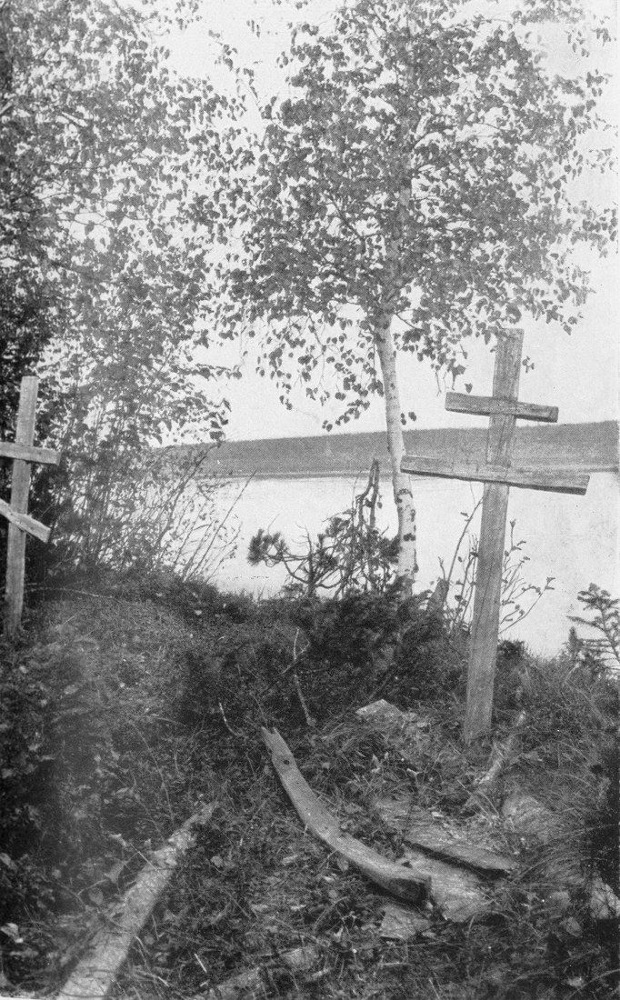
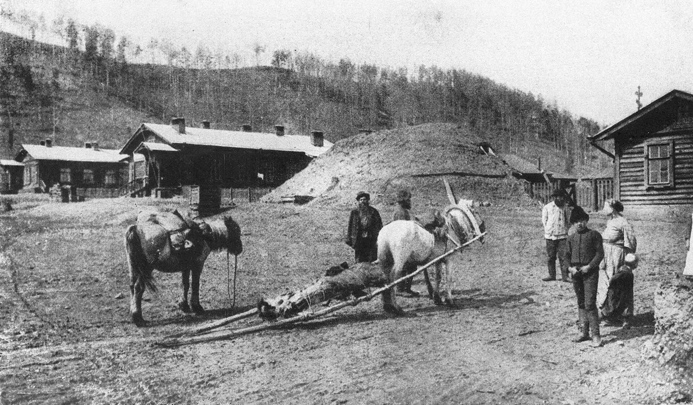

VOL. II · PLATE N · 02 / 06
THE FOREST EDGE
Burial away from the churchyard, the forest on the road to the dead, and a hut at the border
Four kinds of evidence put the dead near the forest: reports of burial in forest ravines, a belief that the way to the dead leads through the woods, a fairy-tale hut at the treeline, and a 1927 survey of the forest spirit. They come from different peoples and different genres, and the plate does not blend them.
Reports published 1916; survey 1927 (translation 1991); articles 2025 · Saratov and Simbirsk provinces (reports); Estonia and Belarus (corpus); Russian folktales (reading) · Eastern Slavic and neighbouring folk belief
PART I · ZELENIN’S COMPILATION
A report from Simbirsk province
Dmitry Zelenin’s 1916 essays on those who died an ‘unnatural’ death are a compilation of local reports, made by other people and gathered into one book. Two are used on this plate; this part takes the first. In Silinskaya volost, Simbirsk guberniya, a ‘deaf forest ravine’ was held to be the proper grave for someone who had drunk himself to death, and burial in the cemetery was said to bring drought and crop failure.
It is a report in someone else’s book, read here through an excerpt. The excerpt read does not say who the villagers were, and the atlas has not checked. Zelenin’s own conclusions about two classes of the dead have been revised since, and the plate takes from him only what local people were reported to do and to fear.

PART III · ESTONIAN AND BELARUSIAN ARCHIVES
The forest on the road
A 2025 comparative study of forest spirits by Mare Kõiva, Elena Boganeva and Ilya Butov remarks that in many rural cultures the forest is a place of hostile forces, or even of hell, and that the road to the realm of the dead is thought to run through it. The authors take that remark from an earlier author, Ivanov (1992), and present it as a common belief, not as their own finding.
The article’s sources are archives in Estonia and Belarus, with a small Russian-language sample from Estonia. It supports a widespread idea; it does not show how that idea was held in any Russian village.
PART IV · THE FOLKTALE
A hut at the treeline
Enrique Santos Marinas, reading the folktales Afanasyev published between 1855 and 1863, argues that the hut of Baba-Yaga stands at the forest edge or in a clearing because that position marks it as a threshold between two realms. On his reading the hut is a gateway to the Other World and its owner guards the passage.
This is a reading of narrative. A tale tells us what a teller expected an audience to recognise, which is not the same as what anyone did with a body. The plate keeps the hut as an image and does not use it as a record of belief.
PART V · THE LESHII
The leshii as one survey records him
Zelenin’s 1927 survey (1991 translation, pp. 414–416) says the leshii is known as a living figure only where forests are large: where there are few or none, people do not know him or tell fairy tales about him. Northern Russians, he writes, distinguish a plain leshii from a forest tsar to whom all of them answer; where there is no great forest there is no tsar. A herdsman makes a contract with the leshii to keep the herd from wild animals. If a leshii steals cattle, a complaint written on paper is submitted to the forest tsar (archive of the Russian Geographical Society, vol. I, no. 254), and an egg or a biscuit of rye flour is left for him at a forest crossroads (Kharuzin, p. 316). Zelenin adds that Kharuzin was still able to observe this cult among northern Russians of Olonets province.
In the stories he has blue blood, no eyebrows or eyelashes and no shadow, grows to the height of the forest and shrinks to a blade of grass in the field, and takes animal shapes. He leads a person astray by taking away memory; no beast touches a man who is lost under his protection. He may tickle a woman to death or carry her off and have children by her. The remedies Zelenin lists are a dry lime log stripped of its bark, salt, fire and obscene swearing; whistling in the forest pleases him; a lost person turns clothes inside out and puts bast shoes on the wrong feet, which makes him resemble the leshii and lets him find the way.
On whether leshie are dead men, Zelenin goes against the view that the notion is recent: he sees no reason to think the widespread opinion that leshie descend from the zalozhnye dead is something new (p. 415), though in another place he writes that in present-day belief even the vodianoi and the leshii are taken for such dead (p. 410). He is a single compiler of the 1920s. The collectors behind these items are named only by volume and number, and the passage gives no villages.
WHAT EACH PART CAN SHOW
What each part can show, kept apart
| Source | Region and genre | What it can support |
|---|---|---|
| I. Zelenin, 1916: Simbirsk province | A report of local practice in a compilation | That in one volost some dead were reported buried in a forest ravine and cemetery burial was feared |
| II. Zelenin, 1916: Orkino, Saratov uezd | A report concerning Mordvins | That the same placing is reported for a neighbouring people; not Russian evidence |
| III. Kõiva, Boganeva and Butov, 2025 | Estonia and Belarus; archive texts about forest spirits | That a road to the dead through the forest is cited as a widespread belief |
| IV. Santos Marinas, 2025 | Russian folktales; literary reading | That the forest edge works as a threshold in the tales |
| V. Zelenin, 1927 (1991 translation) | A survey by one compiler; collectors named by archive volume and number, no villages | That the leshii is called a living figure where forests are large, and that some collectors and Zelenin report the opinion that leshie are ‘pledged’ dead; not where anyone was buried |


Apparatus sources · related plates · terms
Sources for this plate
- zelenin1916 Zelenin, Dmitry K. — Очерки русской мифологии. Вып. 1: Умершие неестественною смертью и русалки (1916)
- koiva2025 Kõiva, Mare; Boganeva, Elena; Butov, Ilya — Forest Spirits and Their Functions in the Traditions of Estonians, Estonian Russians and Belarusians (2025)
- santos2025 Santos Marinas, Enrique — Myth and Immortality in Russian Folktales (2025)
- zelenin1927 Zelenin, Dmitry K. — Vostochnoslavianskaia etnografiia (Russian translation of Russische (Ostslavische) Volkskunde, Berlin–Leipzig 1927), transl. K. D. Tsivina (1991 (German original 1927))
URLs, access dates and limitations are in the bibliography.